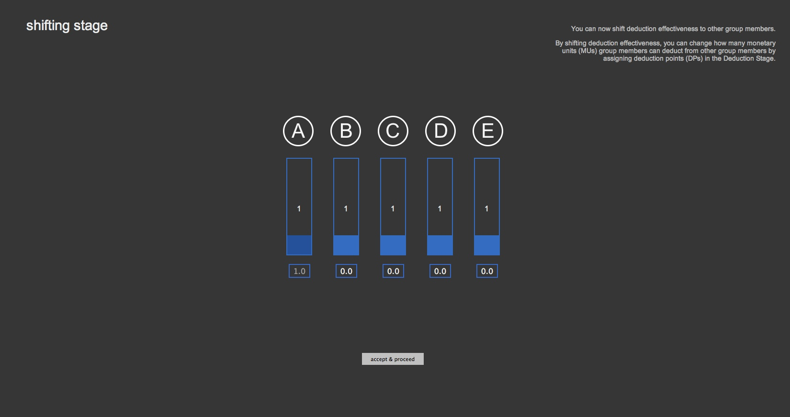
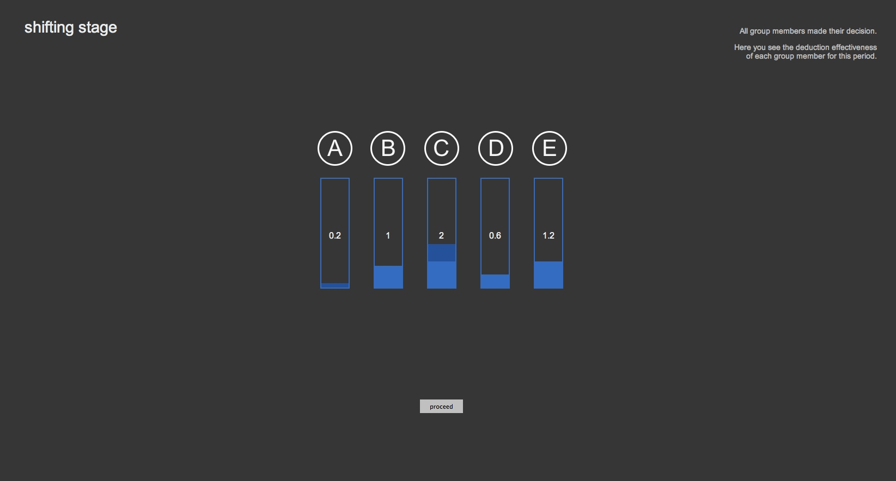

Period 2 had two stages: a Contribution Stage and a Deduction Stage.
In this experiment, there will 20 Periods.
Periods 3-20 will have three Stages, the Contribution Stage, the Deduction Stage and the Shifting Stage.
The order of the Stages is the following:
The Contribution Stage will be identical to the Contribution Stage of Periods 1 and 2.
The Deduction Stage will be identical to the Deduction Stage of Period 2,
except that your deduction effectiveness will depend on the Shifting Stage.
We will now present the Shifting Stage; for your convenience, we summarize the instructions for
the Contribution Stage and the Deduction Stage afterwards. Therefore, the order in which these
instructions are presented here matches the order in which you will have to make decisions in your
group for the remaining Periods.
Shifting Stage
You and all other group members have a deduction effectiveness of 1.0.
In the Shifting Stage, you can decide to shift your deduction effectiveness to other group members. If you decide to shift your effectiveness, you can shift it to one or several other group members in units of 0.1.
Note that you can never shift more effectiveness than 1.0. Thus, your deduction effectiveness can never be negative.
However, if you shift effectiveness to another group member, you can always decide to take it back in later Periods.
The deduction effectiveness of each group member will determine how much the DPs this group member assigns in the Deduction Stage will affect the earnings of others.
Consider the following hypothetical example of a group member A, who decides to assign:
0.4 deduction effectiveness to B
0.0 deduction effectiveness to C
0.2 deduction effectiveness to D
0.0 deduction effectiveness to E
This would mean that A shifted 0.6 deduction effectiveness to others, and kept 0.4 for him/herself.
Other members also decide on how much of their own deduction effectiveness to shift to A
(and to all other group members). For instance:
B shifts 0.2 deduction effectiveness to A
C shifts 0.8 deduction effectiveness to A
D shifts 0.0 deduction effectiveness to A
E shifts 0.6 deduction effectiveness to A
Thus, A receives 1.6 deduction effectiveness from others. A's deduction effectiveness for this Period will be:
0.4 (kept to him/herself) + 1.6 (received from others) = 2.0
Therefore, for each DP A would assign to another group member in the upcoming Deduction Stage of this Period, the payoff of that group member would be reduced by 2.0 MUs.
You can find out how much effectiveness other group members shifted after everybody has made their decision. At the end of the Shifting Stage, as well as in the Deduction Stage you will see the deduction effectiveness for each group member for that Period.
We will now proceed to explain the computer interface for the Shifting Stage.
Computer interface
At the time you will have to make your decision to shift your deduction effectiveness, you will see a screen on the computer similar to this one:

On this screen ...
the number below each group member indicates how much of your deduction effectiveness you shift to this group member
the blue bars indicate the current deduction effectiveness of this group member
By typing numbers in the small box below each group member, you can decide how much of your deduction effectiveness you want to shift to the selected group member.
To make your decision, you have click on 'accept & proceed'. As soon as you press enter, you will not be able to change your decision.
After everyone has made their decision in the Shifting Stage, you will receive feedback about the deduction effectiveness of each group member for this Period:

On this screen ...
each bar shows the deduction effectiveness for this group member
the dark blue areas show how you shifted your deduction effectiveness in this Period
Contribution Stage
At the start of the Contribution Stage, you and the other members each receive 20 MUs.
You and each of the other members will then decide how many of these 20 MUs to contribute to a project.
The total amount of MUs contributed to the project by group members will be multiplied by 1.5. This is the output of the project.
The output will be divided equally among the 5 group members.
Your earnings from the Contributions Stage = MUs kept to yourself + 1.5 * (sum of all MUs contributed to the project / 5)
After you and the all other group members have made your contribution, you will see how much each group member contributed to the project, the output of the project, and the earnings of each group member.
Deduction Stage
In the Deduction Stage, you will decide whether to deduct MUs from other members of your group.
You can assign up to 10 Deduction Points (DPs) to each other group member to decrease their earnings.
Each Deduction Point you assign to another group member costs you 1 MU.
For each DP you assign to another person, their earnings will be decreased by a number of MUs equal to your deduction effectiveness that will be determined in the shifting stage.
After everybody made their decisions in the Deduction Stage, you will be informed on which group member assigned DPs to which other group member.
At the end of the stage, you will be informed of your earnings for that Period.
You can review the results of previous Periods on the summary screen by clicking on the respective Period number on the bottom of the screen.
Earnings
Your earnings for Periods 3-20 are the sum of the earnings from the Contribution Stage and the Deduction Stage of each Period. The Shifting Stage has no direct effect on your payoff.
The sum of your earnings for all 20 Periods gives your total earnings for the experiment.
There will be no further instructions from this point on.
If you have any questions, please raise your hand. If you do not have any questions at the moment, press the button below.